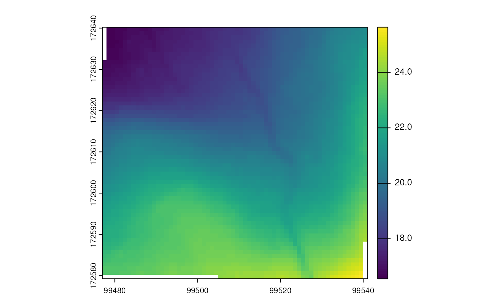

Example use cases to get data from web feature or web coverage services.
Source:vignettes/wfs_wcs.Rmd
wfs_wcs.Rmd
library(sf)
#> Linking to GEOS 3.12.1, GDAL 3.8.4, PROJ 9.4.0; sf_use_s2() is TRUE
library(dplyr)
#>
#> Attaching package: 'dplyr'
#> The following objects are masked from 'package:stats':
#>
#> filter, lag
#> The following objects are masked from 'package:base':
#>
#> intersect, setdiff, setequal, union
library(inbospatial)Introduction
A WFS or Web Feature Service allows you to download vector spatial
data from the web. A WCS or Web Coverage Service is similar, but is used
for raster spatial data. In this vignette, we will show how to the
functions get_feature_wfs() and
get_coverage_wcs() can be used to get data into your R
session from these services.
For a more in-depth explanation about WFS services, we refer to the INBO tutorial about WFS. The tutorial takes a
more hands-on coding approach to getting data from a WFS, whereas in
this vignette much of the coding stuff is hidden away in the
get_feature_wfs() function.
WFS examples
Simple use case without filter
As a test case, we will query municipal boundaries of Flanders from
the “Provisional Reference Municipal Boundaries” (VRBG,
Voorlopig ReferentieBestand Gemeentegrenzen), which is
available via an API on the vlaanderen.be website.
wfs_vrbg <- "https://geo.api.vlaanderen.be/VRBG/wfs"
provinces <- get_feature_wfs(
wfs = wfs_vrbg,
layername = "VRBG:Refprv",
crs = "EPSG:31370"
)
provinces
#> Simple feature collection with 5 features and 7 fields
#> Geometry type: MULTISURFACE
#> Dimension: XY
#> Bounding box: xmin: 21991.63 ymin: 153058.3 xmax: 258871.8 ymax: 244027.2
#> Projected CRS: BD72 / Belgian Lambert 72
#> # A tibble: 5 × 8
#> gml_id UIDN OIDN TERRID NAAM NISCODE NUTS2 SHAPE
#> <chr> <dbl> <dbl> <dbl> <chr> <chr> <chr> <MULTISURFACE [m]>
#> 1 Refprv.1 18 2 357 Antwerpen 10000 BE21 (POLYGON ((178136.3 2440…
#> 2 Refprv.2 19 4 359 Vlaams Br… 20001 BE24 (POLYGON ((200484.9 1935…
#> 3 Refprv.3 20 3 351 West-Vlaa… 30000 BE25 (POLYGON ((80681.53 2276…
#> 4 Refprv.4 21 1 355 Limburg 70000 BE22 (POLYGON ((231494.3 2191…
#> 5 Refprv.5 22 5 356 Oost-Vlaa… 40000 BE23 (POLYGON ((145735.2 2203…You can achieve (almost) the same result using a combination of
sf::read_sf() and sf::st_transform().
provinces2 <- read_sf(paste0("WFS:", wfs_vrbg),
layer = "VRBG:Refprv"
)
waldo::compare(provinces, provinces2,
x_arg = "inbospatial", y_arg = "sf",
max_diffs = 8
)
#> ✔ No differencesBoth methods yield the same result. Note however that for other
examples, you may notice substantial differences, most notably for field
specifications. The reason for such differences is that
get_feature_wfs() retrieves whatever information that is
identified from the WFS request - in the same way as you would paste the
request in the browser. This result is then saved temporarily to a
.GML file and read with sf::read_sf(). Passing
the WFS directly to the dsn argument of
sf::read_sf, on the other hand, will translate the request
to a form that will pass through the GDAL WFS
driver, which handles field specifications by reading them from a
DescribeFeatureType request:
At the first opening, the content of the result of the
GetCapabilitiesrequest will be appended to the file, so that it can be cached for later openings of the dataset. The same applies for theDescribeFeatureTyperequest issued to discover the field definition of each layer.
Apply a CQL-Filter to filter on a field
CQL, the “Common Query Language” (see here, for example), provides a way to filter WFS data. The syntax of CQL is comparable to SQL, yet there are differences in data types and structures.
You can provide and apply filters in get_feature_wfs()
via the cql_filter argument.
wfs_vrbg <- "https://geo.api.vlaanderen.be/VRBG/wfs"
prov <- get_feature_wfs(
wfs = wfs_vrbg,
layername = "VRBG:Refprv",
cql_filter = "NAAM='West-Vlaanderen'"
)
prov
#> Simple feature collection with 1 feature and 7 fields
#> Geometry type: MULTISURFACE
#> Dimension: XY
#> Bounding box: xmin: 21991.63 ymin: 155928.6 xmax: 90410.78 ymax: 229724.6
#> Projected CRS: BD72 / Belgian Lambert 72
#> # A tibble: 1 × 8
#> gml_id UIDN OIDN TERRID NAAM NISCODE NUTS2 SHAPE
#> <chr> <dbl> <dbl> <dbl> <chr> <chr> <chr> <MULTISURFACE [m]>
#> 1 Refprv.3 20 3 351 West-Vlaa… 30000 BE25 (POLYGON ((80681.53 2276…Here, we could have also used sf::read_sf() in
combination with an OGR SQL
query:
prov2 <- read_sf(paste0("WFS:", wfs_vrbg),
query = "SELECT * FROM Refprv WHERE NAAM='West-Vlaanderen'"
)
waldo::compare(prov, prov2)
#> ✔ No differencesBoth methods yield the same result.
Request a subset of fields
Instead of querying the complete data table, one can select a subset
of variables (fields). The function get_feature_wfs()
provides the property_name keyword for it, which accepts a
string of comma-separated field names. Note that field names are
capitalized on this particular geoserver.
wfs_vrbg <- "https://geo.api.vlaanderen.be/VRBG/wfs"
prov_fields <- get_feature_wfs(
wfs = wfs_vrbg,
layername = "VRBG:Refprv",
crs = "EPSG:31370",
property_name = paste("NAAM", "NUTS2", "SHAPE", sep = ",")
)
prov_fields
#> Simple feature collection with 5 features and 2 fields
#> Geometry type: MULTISURFACE
#> Dimension: XY
#> Bounding box: xmin: 21991.63 ymin: 153058.3 xmax: 258871.8 ymax: 244027.2
#> Projected CRS: BD72 / Belgian Lambert 72
#> # A tibble: 5 × 3
#> NAAM NUTS2 SHAPE
#> <chr> <chr> <MULTISURFACE [m]>
#> 1 Antwerpen BE21 (POLYGON ((178136.3 244009.2, 178131.2 244010.4, 178133…
#> 2 Vlaams Brabant BE24 (POLYGON ((200484.9 193541, 200484.8 193541.2, 200484.5…
#> 3 West-Vlaanderen BE25 (POLYGON ((80681.53 227626.5, 80777.99 228143, 80661.88…
#> 4 Limburg BE22 (POLYGON ((231494.3 219142.5, 231194.3 219455.2, 230929…
#> 5 Oost-Vlaanderen BE23 (POLYGON ((145735.2 220358.3, 145217.2 220640.1, 145216…Again, we can use sf::read_sf() in combination with an
OGR SQL
query:
Meteorological data example
Another example of a WFS API is the Belgian Royal Meteorological
Institute (KMI,
Koninklijk Meteorologisch Instituut van België). Details
can be found
here, and
here.
kmi <- "https://opendata.meteo.be/service/wfs"
kmi_stations <- get_feature_wfs(
wfs = kmi,
layer = "synop:synop_station"
)
kmi_stations
#> Simple feature collection with 22 features and 4 fields
#> Geometry type: POINT
#> Dimension: XY
#> Bounding box: xmin: 2.887306 ymin: 49.62036 xmax: 6.073438 ymax: 51.34738
#> Geodetic CRS: WGS 84
#> # A tibble: 22 × 5
#> gml_id name altitude date_end the_geom
#> <chr> <chr> <dbl> <dttm> <POINT [°]>
#> 1 synop_station.6… SPA … 482 NA (5.909864 50.47861)
#> 2 synop_station.6… SAIN… 557 NA (5.403753 50.03887)
#> 3 synop_station.6… BEIT… 24.8 NA (3.121692 50.90398)
#> 4 synop_station.6… ZEEB… 12.1 NA (3.201846 51.34737)
#> 5 synop_station.6… STAB… 4 NA (4.363798 51.3248)
#> 6 synop_station.6… UCCL… 101. 2003-12-09 08:00:00 (4.357871 50.79686)
#> 7 synop_station.6… UCCL… 101. NA (4.357871 50.79686)
#> 8 synop_station.6… DIEP… 39.3 NA (5.450296 50.91546)
#> 9 synop_station.6… BIER… 178 NA (5.458738 50.64528)
#> 10 synop_station.6… SINT… 8.3 NA (4.524608 51.07512)
#> # ℹ 12 more rowsThis is a list of all KMI stations. You can plot it with
leaflet or mapview to see the stations on a
map and learn that -for instance- Ukkel has code 6447. So let’s extract
the maximum daily temperatures for Ukkel starting from the year
2000.
kmi_synop <- get_feature_wfs(
wfs = kmi,
layername = "synop:synop_data",
property_name = paste(
"code", "timestamp", "temp_max", "the_geom",
sep = ","
),
cql_filter = "((code = 6447) AND (temp_max IS NOT NULL) AND
(timestamp >= '2000-01-01 00:00:00.000'))"
)
kmi_synop
#> Simple feature collection with 9074 features and 3 fields
#> Geometry type: POINT
#> Dimension: XY
#> Bounding box: xmin: 4.357871 ymin: 50.79666 xmax: 4.357875 ymax: 50.79686
#> Geodetic CRS: WGS 84
#> # A tibble: 9,074 × 4
#> code timestamp temp_max the_geom
#> <int> <dttm> <dbl> <POINT [°]>
#> 1 6447 2021-08-06 18:00:00 20.6 (4.357871 50.79686)
#> 2 6447 2021-09-17 18:00:00 22.2 (4.357871 50.79686)
#> 3 6447 2021-09-16 18:00:00 20.9 (4.357871 50.79686)
#> 4 6447 2021-09-18 18:00:00 23 (4.357871 50.79686)
#> 5 6447 2021-09-19 18:00:00 21.7 (4.357871 50.79686)
#> 6 6447 2021-09-20 18:00:00 19 (4.357871 50.79686)
#> 7 6447 2021-09-21 18:00:00 18.3 (4.357871 50.79686)
#> 8 6447 2021-09-22 18:00:00 19.8 (4.357871 50.79686)
#> 9 6447 2021-08-07 18:00:00 20.6 (4.357871 50.79686)
#> 10 6447 2021-08-08 18:00:00 20.1 (4.357871 50.79686)
#> # ℹ 9,064 more rowsSpatial filtering using a bounding box
Few analyses will require a whole countries’ data, even if the
country is as small as Belgium. Hence, it might be useful by restricting
the data you query with a bounding box. This works as follows, using a
bbox with the elements xmin,
ymin, xmax, and ymax.
wfs_bwk <-
"https://geo.api.vlaanderen.be/BWK/wfs"
bwk_bbox <- get_feature_wfs(
wfs = wfs_bwk,
layername = "BWK:Bwkhab",
crs = "EPSG:31370",
bbox = c(xmin = 142600, ymin = 153800, xmax = 146000, ymax = 156900)
)
bwk_bbox
#> Simple feature collection with 668 features and 32 fields
#> Geometry type: MULTISURFACE
#> Dimension: XY
#> Bounding box: xmin: 137307.1 ymin: 153734.4 xmax: 146672.9 ymax: 160747.2
#> Projected CRS: BD72 / Belgian Lambert 72
#> # A tibble: 668 × 33
#> gml_id UIDN OIDN TAG EVAL EENH1 EENH2 EENH3 EENH4 EENH5 EENH6 EENH7
#> <chr> <dbl> <dbl> <chr> <chr> <chr> <chr> <chr> <chr> <chr> <chr> <chr>
#> 1 Bwkhab.6… 1.33e6 7.69e5 3785… z va qe vc NA NA NA NA
#> 2 Bwkhab.6… 7.29e5 7.06e5 5330… w ni que NA NA NA NA NA
#> 3 Bwkhab.7… 1.37e6 8.15e5 2468… m ur NA NA NA NA NA NA
#> 4 Bwkhab.9… 1.59e6 1.01e6 4050… wz hr hc- NA NA NA NA NA
#> 5 Bwkhab.6… 1.32e6 7.57e5 4075… m ua NA NA NA NA NA NA
#> 6 Bwkhab.7… 7.35e5 7.12e5 5393… z fe NA NA NA NA NA NA
#> 7 Bwkhab.7… 1.38e6 8.19e5 3947… z cg NA NA NA NA NA NA
#> 8 Bwkhab.9… 7.57e5 7.35e5 5779… w pmp lar NA NA NA NA NA
#> 9 Bwkhab.8… 1.53e6 9.52e5 3975… mwz hp n kh NA NA NA NA
#> 10 Bwkhab.7… 7.35e5 7.13e5 5394… w pmb lar cas NA NA NA NA
#> # ℹ 658 more rows
#> # ℹ 21 more variables: EENH8 <chr>, V1 <chr>, V2 <chr>, V3 <chr>, HERK <chr>,
#> # INFO <chr>, BWKLABEL <chr>, HAB1 <chr>, PHAB1 <int>, HAB2 <chr>,
#> # PHAB2 <int>, HAB3 <chr>, PHAB3 <int>, HAB4 <chr>, PHAB4 <int>, HAB5 <chr>,
#> # PHAB5 <int>, HERKHAB <chr>, HERKPHAB <chr>, HABLEGENDE <chr>,
#> # SHAPE <MULTISURFACE [m]>This returns a MULTISURFACE geometry type. We can use a
couple of sf functions to cast this to regular
polygons:
bwk_bbox %>%
st_cast("GEOMETRYCOLLECTION") %>%
st_collection_extract("POLYGON") %>%
st_geometry() %>%
plot()This can also be done using the wkt_filter argument from
sf::read_sf.
Spatial filters using spatial binary predicates
In addition to the filters above, you can use logical operations to restrict your area of interest. For example, features can be selected by intersection with another geographical object.
Intersects a point
As a proof of concept, we can directly query soil parameters at a specific location.
wfs_soiltypes <-
"https://www.dov.vlaanderen.be/geoserver/bodemkaart/bodemtypes/wfs"
x_lam <- 173995
y_lam <- 212093
soil_type <- get_feature_wfs(
wfs = wfs_soiltypes,
layername = "bodemkaart:bodemtypes",
crs = "EPSG:31370",
cql_filter = sprintf(
"INTERSECTS(geom,POINT(%s %s))",
x_lam, y_lam
)
)
soil_type
#> Simple feature collection with 1 feature and 45 fields
#> Geometry type: MULTISURFACE
#> Dimension: XY
#> Bounding box: xmin: 173846.5 ymin: 211962.5 xmax: 174030.9 ymax: 212190
#> Projected CRS: BD72 / Belgian Lambert 72
#> # A tibble: 1 × 46
#> gml_id gid id_kaartvlak Bodemtype Unibodemtype Bodemserie
#> * <chr> <int> <int> <chr> <chr> <chr>
#> 1 bodemtypes.72727 67754 67754 s-Pgp3(v) s-Pgp3(v) Pgp
#> # ℹ 40 more variables: Beknopte_omschrijving_bodemserie <chr>,
#> # Substraat_legende <chr>, Gegeneraliseerde_legende <chr>,
#> # Substraat_code <chr>, Substraat_Vlaanderen <chr>, Textuurklasse_code <chr>,
#> # Textuurklasse <chr>, Drainageklasse_code <chr>, Drainageklasse <chr>,
#> # Profielontwikkelingsgroep_code <chr>, Profielontwikkelingsgroep <chr>,
#> # Fase_code <chr>, Fase <chr>, Variante_van_het_moedermateriaal_code <chr>,
#> # Variante_van_het_moedermateriaal <chr>, …In theory, this should also be possible “the sf way”.
However, sf filters after query (which takes a long time),
and the code below does not work correctly.
WCS examples
Above, we covered Web Feature Services (WFS), which are many kinds of
vector data. Another common geographical data type are grid-like or
“raster” data, which you can retrieve via Web Coverage Services
(WCS). Behold, there is a get_coverage_wcs() available
for some of the web services we regularly use at INBO.
Below the example of a false-colour infrared image. The three bands
of the image are visualized using terra::plotRGB.
bbox <- sf::st_bbox(
c(xmin = 99477, xmax = 99541, ymin = 172580, ymax = 172640),
crs = sf::st_crs(31370)
)
omz <- get_coverage_wcs(
wcs = "omz",
bbox = bbox,
layername = "OI.OrthoimageCoverage.OMZ.CIR",
resolution = 1,
version = "1.0.0"
)
terra::plotRGB(omz)Another example, this time extracting the digital terrain model for the same bounding box:
dtm <- get_coverage_wcs(
wcs = "dtm",
bbox = bbox,
layername = "EL.GridCoverage.DTM",
resolution = 1)
terra::plot(dtm)
More details on WCS can be found in the
spatial_dhmv_query.Rmd vignette.